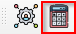

Land Cover and Land Cover Change#
Land Cover#
1. To start the land cover analysis, click the calculate icon highlighted . This will open the calculate dialog.
{kind=link}
Figure 10: Calculate Dialog#
2. From here, click on the Land Cover Indicator button highlighted in red. This will open the SDG Dialog.
Figure 11: Land Degradation dialog#
3. On the dialog, click the Land Cover button highlighted in red. This will open the Land Cover dialog.
Figure 12: Land Cover Dialog#
4. On the Land Cover Analysis Options select Land Cover.
Figure 13: Land Cover Analysis Option#
Important
Parameters |
Definition |
|---|---|
Land Cover Analysis Options |
The Land cover analysis option of choice |
Data Source |
The data source of choice |
Reporting period |
Year of analysis |
5. Provide all other parameters required in the
dialog and click Submit. The results should be displayed as shown below.
Figure 14: Land Cover Results#
Land Cover Change#
1. On the Land Cover dialog, select Land Cover Change as the Land Cover Analysis Option. In this section you will have
to provide a Start year and an end year.
Figure 15: Land Cover Change Analysis Option#
Important
Parameters |
Definition |
|---|---|
Land Cover Analysis Options |
The Land cover analysis option of choice |
Data Source |
The data source of choice |
Start year |
Base year/Start year |
End year |
Comparison year/end year |
2. Provide all other parameters required in the
dialog and click Submit. The results should be displayed as shown below.
Figure 16: Land Cover Change Results#